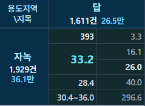
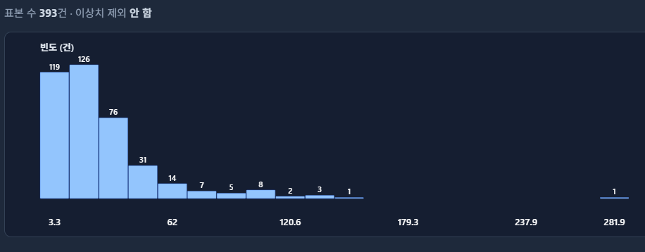

서두 · 학습목표
평균이 같으면 거래단가의 분포도 비슷할까요?
두 지역의 평균단가가 모두 100만원/㎡라고 해 보겠습니다. 한 지역은 95, 100, 105이고 다른 지역은 50, 100, 150입니다. 평균은 같지만 두 번째 지역의 차이가 더 큽니다. 이 퍼짐을 숫자로 나타내는 방법이 분산과 표준편차입니다.
- 평균이 같아도 퍼짐은 다를 수 있습니다.
- 편차와 제곱편차를 계산합니다.
- 분산과 표준편차의 단위를 구별합니다.
- n과 n−1 분모를 구별합니다.
- 극단값이 표준편차에 미치는 영향을 살펴봅니다.
- 단위 변환, IQR, 표준오차, 예측오차와 구별합니다.
- CH2 Macro의 거래단가 표준편차를 읽습니다.
| 구분 | 관측 | 평균 | 분산 | 표준편차 |
|---|---|---|---|---|
| A | 25, 30, 35 | 30 | 16.67 | 4.08 |
| B | 10, 30, 50 | 30 | 266.67 | 16.33 |
A의 제곱편차 합은 25+0+25=50이고, 3으로 나눈 분산은 약 16.67, 표준편차는 약 4.08입니다. B의 제곱편차 합은 800, 분산은 약 266.67, 표준편차는 약 16.33입니다. 표준편차는 네 배 차이입니다. 이 예제의 단위는 분이며 부동산 거래가 아닙니다.
편차와 제곱편차
편차를 그대로 더하면 퍼짐이 사라집니다
편차는 관측값에서 평균을 뺀 값입니다. 가상 단가 80, 100, 120의 평균은 100이고 편차는 −20, 0, +20입니다. 합은 0입니다. 산술평균으로 계산한 편차의 합은 언제나 0이므로, 편차를 그대로 더해서는 퍼짐을 나타낼 수 없습니다.
편차를 제곱하면 400, 0, 400이고 합은 800입니다. 평균에서 10 떨어진 제곱편차는 100, 20 떨어진 제곱편차는 400입니다. 거리가 두 배가 되면 제곱편차는 네 배가 됩니다. 절댓값의 평균은 (20+0+20)/3≈13.33이고, 곧 계산할 표준편차 약 16.33과 다릅니다.
분산과 표준편차
제곱편차의 평균을 구한 뒤 제곱근으로 단위를 되돌립니다
n으로 나눈 분산은 제곱편차 합을 관측수로 나눈 값입니다. 앞의 세 건은 800/3≈266.67이고 단위는 (만원/㎡)²입니다. 266.67만원/㎡만큼 떨어져 있다는 뜻이 아닙니다. 표준편차는 분산의 제곱근이므로 약 16.33만원/㎡입니다. 모든 거래가 평균에서 정확히 16.33씩 떨어져 있다는 뜻도 아닙니다.
분산과 표준편차는 0 이상입니다. 모든 값이 같으면 둘 다 0입니다. 표준편차가 크다고 최댓값과 최솟값의 차이가 반드시 더 큰 것은 아닙니다. 분포가 대칭인지, 꼬리가 긴지, 봉우리가 여러 개인지도 표준편차만으로 알 수 없습니다.
공통 30건
반올림하기 전의 평균으로 제곱편차를 계산합니다
1~5장의 공통 학습자료 30건입니다. 단가 합계는 4,390이고 평균은 4,390/30=146.333…입니다. 중간에 146.33으로 반올림하지 않습니다. 제곱편차 합은 약 192,760.67입니다. 30으로 나누면 분산은 약 6,425.36, 표준편차는 약 80.16만원/㎡입니다. 4,390은 단가를 더한 값이며 거래금액의 합이 아닙니다. 출처와 표집 설계가 확인되지 않은 학습 자료이므로 특정 지역의 변동성으로 읽지 않습니다. 전체 표와 원자료에서 확인할 수 있습니다.
n과 n−1
자료 자체를 요약하는 것과 모집단 분산을 추정하는 것은 다릅니다
n으로 나누면 관측한 자료의 퍼짐을 요약합니다. 모집단 N개를 모두 알 때는 모집단 평균을 기준으로 N으로 나눕니다. 독립적이고 같은 분포의 표본으로 모집단 분산을 추정할 때는 n−1로 나눈 표본분산을 널리 씁니다. 표본평균은 같은 자료의 제곱편차 합을 가장 작게 만들므로, n으로 나누면 모집단 분산을 평균적으로 작게 추정할 수 있습니다. 이 보정은 적절한 표집 가정 아래의 성질입니다.
n−1은 관측 한 건을 버리는 수가 아닙니다. 30건을 모두 사용합니다. 편차의 합이 0이므로 일부를 알면 마지막 편차가 정해집니다. 그 제약을 자유도 n−1이라고 부릅니다. n=1이면 n−1 방식은 계산할 수 없습니다.
| 항목 | n | n−1 |
|---|---|---|
| 관측수 | 30 | 30 |
| 분모 | 30 | 29 |
| 제곱편차 합 | 192,760.67 | 192,760.67 |
| 분산 | 6,425.36 | 6,646.92 |
| 표준편차 | 80.16 | 81.53 |
n−1 방식이 모든 상황에서 더 올바른 것은 아닙니다. 지금 가진 거래의 퍼짐을 기술하려면 n을 쓸 수 있고, 더 큰 모집단의 분산을 확률표본으로 추정하려면 n−1이 필요할 수 있습니다. 표본분산이 불편추정량이 될 수 있어도, 그 제곱근인 표본표준편차까지 자동으로 불편추정량이 되는 것은 아닙니다.
극단값
한 건을 빼면 평균과 제곱편차를 다시 계산합니다
7번의 단가는 480만원/㎡입니다. 평균 약 146.33과의 차이는 약 333.67이고, 제곱하면 표준편차에 크게 반영됩니다. 포함한 30건의 n 방식 표준편차는 약 80.16입니다. 7번을 뺀 29건은 합계 3,910, 평균 약 134.83, 표준편차 약 51.72입니다. 이 값은 남은 29건의 평균으로 제곱편차를 다시 계산한 결과입니다. 전체 제곱편차 합에서 7번의 제곱편차만 뺀 값이 아닙니다.
그림 3은 같은 30건에서 분모만 30과 29로 바꿉니다. 그림 4는 자료가 30건에서 29건으로 바뀌고 평균과 제곱편차 합도 다시 계산됩니다. 표준편차가 줄었다고 7번을 지우는 근거가 되지는 않습니다. 면적, 금액, 용도지역, 거래 유형, 특수 조건을 확인합니다.
5장의 두 절반 방식에서 Q1은 98, Q3는 168, IQR은 70만원/㎡입니다. n 방식 표준편차는 약 80.16만원/㎡입니다. 숫자가 비슷해 보여도 같은 범위가 아닙니다. IQR은 가운데 부분이고, 표준편차는 모든 제곱편차를 반영합니다. 표준편차가 더 크다고 분산이 더 넓다고 단정하지 않습니다. 울타리 밖의 관측이 잘못된 거래인 것도 아닙니다. 처리는 7장 「이상치와 IQR」에서 다룹니다.
단위와 변동계수
더하면 편차가 유지되고, 곱하면 표준편차가 배수가 됩니다
모든 값에 같은 수를 더하면 평균도 그만큼 이동해 편차는 그대로입니다. 모든 값에 a를 곱하면 분산은 a²배, 표준편차는 |a|배가 됩니다. 음수를 곱해도 표준편차는 음수가 되지 않습니다. 원 단위와 만원 단위의 표준편차를 숫자 크기만으로 비교하지 않습니다.
| 자료 | 평균 | 분산 | 표준편차 |
|---|---|---|---|
| 80, 100, 120 | 100 | 266.67 | 16.33 |
| 180, 200, 220 | 200 | 266.67 | 16.33 |
| 160, 200, 240 | 200 | 1,066.67 | 32.66 |
표준편차가 모두 20이어도 평균이 100인 집단과 1,000인 집단은 평균에 비한 퍼짐이 다릅니다. 변동계수는 표준편차를 평균으로 나눈 값입니다. 이 예제에서는 20/100=20%, 20/1,000=2%입니다. 평균이 0에 가까우면 불안정하고, 0이 없음이 아닌 척도에는 그대로 쓰기 어렵습니다. 가격 위험을 자동으로 평가하는 지표도 아닙니다.
해석의 한계
표준편차, 표준오차, 예측오차는 다른 질문입니다
표준편차는 관측값이 평균 주변에 얼마나 퍼져 있는지입니다. 표준오차는 추정량이 표집을 반복할 때 얼마나 흔들릴 수 있는지입니다. 독립적이고 같은 분포라면 표본평균의 표준오차는 n−1로 계산한 표본표준편차를 √n으로 나눈 값으로 추정할 수 있습니다. 거래가 같은 지역에 몰려 서로 의존하면 이 공식이 맞지 않을 수 있습니다. 건수가 늘어도 관측값의 표준편차가 반드시 줄지는 않습니다. 차이는 11장 「표준오차와 표본수」에서 다룹니다.
평균이 100이고 표준편차가 20이면 평균±표준편차는 80~120입니다. 그 안에 약 68%가 있다는 말은 정규분포의 성질입니다. 공통 30건이나 부동산 거래단가가 정규분포라고 확인된 것은 아닙니다. 이 구간은 95% 신뢰구간도, 새로운 거래의 예측구간도 아닙니다.
지역의 표준편차가 크다고 회귀모형의 예측오차도 그만큼 큰 것은 아닙니다. 표준편차는 실제 단가와 전체 평균의 거리이고, 잔차는 실제 단가와 적합값의 차이이며, 검증 예측오차는 학습에 쓰지 않은 자료의 차이입니다. 표준편차가 작다고 모형이 우수하다고 판단하지 않습니다.
확인 문제
편차·분모·단위를 구별해 보세요
- 80·100·120의 편차 합이 0이면 표준편차도 0일까요?
답과 해설
아닙니다. 편차는 −20, 0, 20이고 제곱편차 합은 800입니다. n으로 나눈 분산은 약 266.67, 표준편차는 약 16.33입니다.
- 30건의 제곱편차 합을 29로 나누었다면 거래 한 건을 제외한 것일까요?
답과 해설
그렇지 않습니다. 같은 30건에서 분모만 29입니다. 한 건을 빼면 평균과 제곱편차 합을 다시 계산합니다.
- 모든 거래단가에 100만원/㎡를 더하면 표준편차는 어떻게 달라질까요?
답과 해설
변하지 않습니다. 모든 값과 평균이 같이 이동하므로 편차가 그대로입니다.
- 모든 거래단가를 두 배로 바꾸면 표준편차와 분산은 어떻게 될까요?
답과 해설
표준편차는 두 배, 분산은 네 배입니다. 편차가 두 배가 되고 제곱편차는 네 배가 됩니다.
- 표준편차가 28.4만원/㎡라면 거래의 약 68%가 평균±28.4 안에 있을까요?
답과 해설
그렇게 단정할 수 없습니다. 약 68.3%는 정규분포의 성질입니다. 분포를 확인하지 않았다면 그 비율을 미리 말할 수 없습니다.
CH2 Macro에서 읽기
평균 33.2, 중앙값 26.0, 표준편차 28.4를 함께 읽습니다
아래는 자녹과 답이 만나는 칸의 과거 화면입니다. 거래 393건, 평균 33.2, 중위 26.0, 표준편차 28.4만원/㎡입니다. 캡처 당시의 값이며 공통 30건이나 현재 운영 통계가 아닙니다.

표시된 숫자로 평균±표준편차를 계산하면 4.8~61.6만원/㎡입니다. 이 구간은 최솟값·최댓값도, 95% 신뢰구간도, 거래의 68%가 들어가는 범위도 아닙니다. 화면의 30.4~36.0이 평균의 신뢰구간입니다.

확인한 토지 기본통계의 표준편차는 그 칸에 들어온 거래단가를 n−1로 나눈 값입니다. 거래 한 건이 같은 비중이고, 화면은 소수 한 자리로 반올림합니다. 이번 장의 공통 30건 설명은 자료 자체를 요약할 때 n으로 나눕니다. 두 분모를 같은 것으로 보지 않습니다. 매트릭스 조회는 이상치를 빼지 않은 목록으로 계산합니다. 읍면동 표준편차를 평균해 시군구 표준편차로 만들지 않고, 선택한 범위의 거래를 모아 다시 계산합니다.
표준편차 50인 지역과 20인 지역을 비교할 때도 단위, 평균 수준, 유형, 거래 구성, 건수를 함께 봅니다. 3년·5년·7년으로 기간이 넓어져도 표준편차가 반드시 커지지는 않습니다. 서로 다른 면적과 용도가 한 칸에 섞이면 퍼짐이 커질 수 있습니다. 표준편차는 선택된 거래의 단가 분포를 설명하는 지표이며, 개별 부동산의 위험이나 앞으로의 변동성을 자동으로 측정하지 않습니다.
결론 · 학습 요약
표준편차는 중심이 아닌 퍼짐의 숫자입니다
- 편차: 관측값에서 평균을 뺀 값입니다. 합은 0입니다.
- 분산: 제곱편차를 모은 값이고 단위는 제곱입니다.
- 표준편차: 분산의 제곱근이며 원래 단위를 갖습니다.
- n과 n−1: 자료의 기술과 모집단 분산의 추정은 분모가 다릅니다. n−1은 한 건을 버리는 뜻이 아닙니다.
- 극단값: 먼 관측은 제곱편차를 키웁니다. 제외하면 평균부터 다시 계산합니다.
- 다른 지표: IQR, 표준오차, 신뢰구간, 예측오차와 구별합니다.
다음 7장 「이상치와 IQR」에서는 멀리 떨어진 값을 어떻게 확인하고 처리하는지 살펴봅니다.
표준편차가 크다는 것은 관측이 평균 주변에 넓게 퍼져 있다는 뜻입니다. 자료에 오류가 있다거나 시장이 위험하다는 뜻은 아닙니다.
참고자료
참고자료 확인일: 2026-10-07. 그림 1·2는 가상 자료이고 그림 3·4는 공통 학습자료 30건입니다. 화면의 393건은 캡처 당시의 자료입니다.